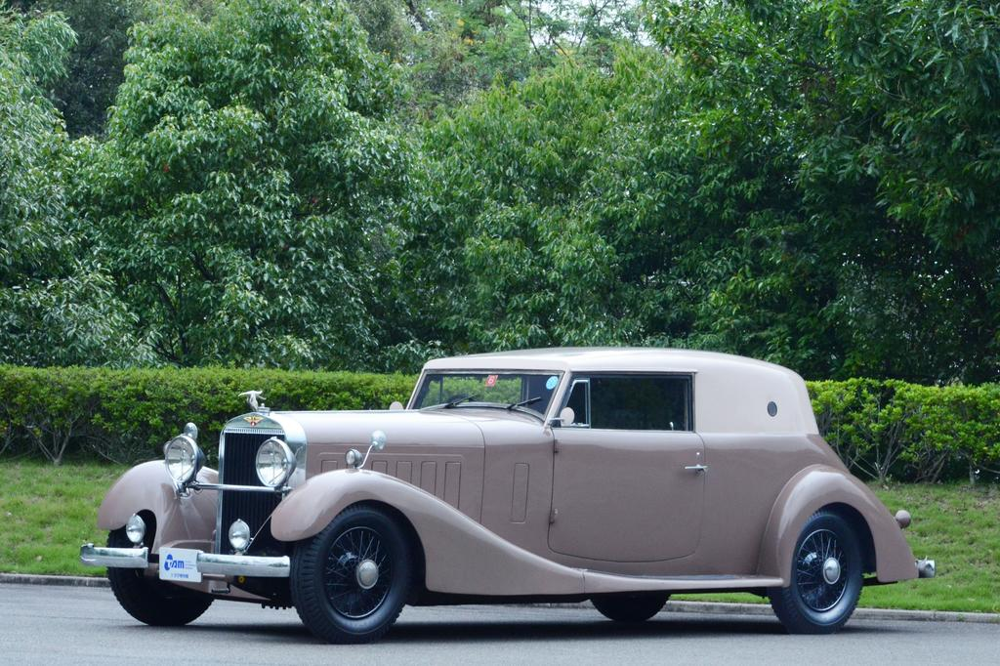

Profil Museum
Museum TAM (Toyota Automobile Museum) merupakan salah satu museum otomotif di Jepang,tepatnya berlokasi di daerah Prefektur Aichi,Jepang. Pada museum ini,Toyota menampilkan evolusi dan budaya otomotif dari masa lampau hingga masa kini secara sistematis seperti museum-museum otomotif milik produsen otomotif lainnya. Akan tetapi,Uniknya pada museum ini Toyota tidak hanya memamerkan produk-produknya saja. Melainkan juga menampilkan produk-produk dari produsen otomotif lainnya seperti Nissan,Isuzu,Subaru dan bahkan juga memamerkan produk dari pabrikan non Jepang seperti Audi dan Mercedes-Benz. Hal ini dilakukan oleh Toyota karena mereka ingin menunjukkan sejarah sebuah mobil,terlepas dari apapun merknya itu. Museum ini memiliki lahan sebesar 46,700m². Sedangkan untuk luas gedung sebesar 4,800m² untuk galeri otomotif dan 2,700m² untuk galeri budaya dan untuk luas lantainya adalah sebesar 11,000m² untuk galeri otomotif dan 8,250m² untuk galeri budaya. Serta memiliki 3 lantai pada masing-masing gedungnya. Adapun penghargaan yang didapatkan oleh museum ini adalah The 21st Chubu Architecture Award pada tahun 1989,The 1st Aichi Machinami Architecture Award pada tahun 1994, dan The Japan Society for Exhibition Studies Award pada tahun 2020.
Asal-usul berdirinya Museum
Museum TAM (Toyota Automobile Museum) dibuka pada April 1989. Museum ini didirikan oleh Toyota Motor Company dalam rangka merayakan ulang tahun ke 50 tahunnya Toyota Motor Company.
Koleksi Museum
Selama kurang lebih 34 tahun,museum ini telah memiliki banyak koleksi. Dimana pada saat ini,museum ini memiliki koleksi kendaraan sebanyak 184 unit kendaraan yang terdiri dari berbagai merek dan juga memiliki 200,000 koleksi benda yang berhubungan dengan budaya otomotif untuk keseluruhannya. Namun,untuk koleksi yang dipamerkan sebanyak 4,000 koleksi untuk koleksi budaya otomotif dan kurang lebih sekitar 128 mobil yang dipamerkan. Selain itu,pada museum ini juga terdapat perpustakaan yang memiliki koleksi yang berhubungan dengan otomotif. Baik koleksi fisik seperti buku maupun koleksi multimedia seperti koleksi audiovisual. Adapun beberapa koleksi yang dimiliki oleh museum ini adalah :

Benz Velo

Ford Model T Touring

Hispano-Suizka-K6

Bugatti Type 57 C

Toyota 2000GT

Nissan Skyline GTR BNR32

Honda NSX NA1

Lexus LFA

Toyota Mirai

Penggambaran Evolusi kendaraan yang berbentuk skala 1/43

Logo-logo produsen otomotif